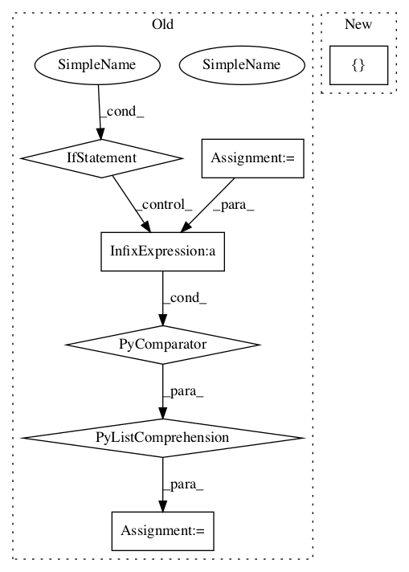

de00082780be884fc90e0113d323bfd63006ffba,main.py,Model,train,#Model#Any#Any#,428

Before Change
for i_batch, data_pt in enumerate(dataset.epoch(
"train", hparams.BATCH_SIZE * hparams.MAX_N_SIGNAL, shuffle=True)):
max_len = max(map(len, data_pt[0]))
spectra = np.stack(
[np.pad(x, [(0, (-len(x))%max_len), (0,0)], mode="constant") for x in data_pt[0]])
spectra = np.reshape(
spectra,
[hparams.BATCH_SIZE, hparams.MAX_N_SIGNAL, max_len, hparams.FEATURE_SIZE])
to_feed = dict(
After Change
hparams.BATCH_SIZE * hparams.MAX_N_SIGNAL, shuffle=True)):
to_feed = dict(
zip(self.train_feed_keys, (
np.reshape(data_pt[0], [hparams.BATCH_SIZE, hparams.MAX_N_SIGNAL, -1, hparams.FEATURE_SIZE]),
hparams.DROPOUT_KEEP_PROB)))
step_summary, step_fetch = g_sess.run(
self.train_fetches, to_feed)[:2]
In pattern: SUPERPATTERN
Frequency: 3
Non-data size: 7
Instances
Project Name: khaotik/DaNet-Tensorflow
Commit Name: de00082780be884fc90e0113d323bfd63006ffba
Time:
Author: null
File Name: main.py
Class Name: Model
Method Name: train
Project Name: asyml/texar
Commit Name: 99153ad034108b7d0e759fc246cb3d05593ee897
Time:
Author: null
File Name: texar/agents/pg_agent.py
Class Name: PGAgent
Method Name: _train_policy
Project Name: NifTK/NiftyNet
Commit Name: 135a56e0935fbb04811f8ce7b9f514f498212f71
Time:
Author: null
File Name: niftynet/layer/crf.py
Class Name:
Method Name: ftheta